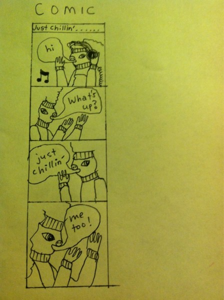
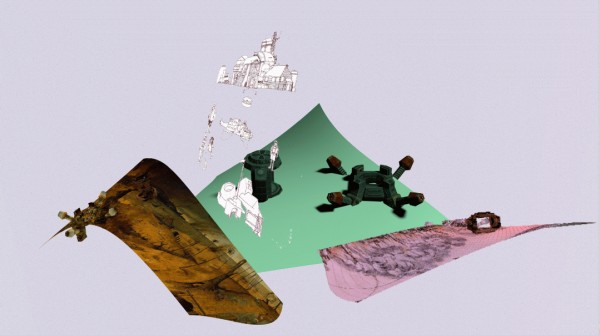
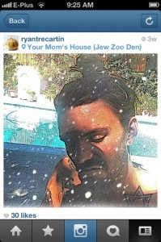
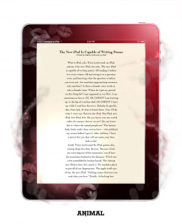
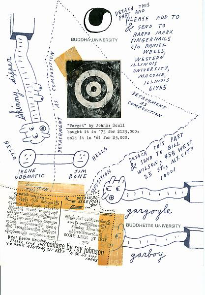

-
Selection No. 1
by Brian Droitcour August 21, 2012
Jérôme Bel’s ‘Disabled Theater,’ 2012. courtesy of the artist.
1. All of Documenta 13 was great but the most potent work was Jérôme Bel’s Disabled Theater. The choreographer worked with actors from Zurich’s Theatre HORA, who have Down syndrome or other learning disabilities. They presented their bodies and their selves, by turns defiant, plain, blunt. They danced solos they had choreographed and reflected on the experience. Watching it was discomforting — even when it was fun — because of how pointedly it assaulted unexamined assumptions about what gives a person the right to perform, to be looked at, to decide what kind of art is worth making and sharing. Carolyn Christov-Bakargiev’s statements aligned her Documenta with the object-oriented trend in philosophy; she sought encounters with difference by asking questions about the rights of meteorites, the affect of photons, the art preferences of dogs. But Disabled Theater was Documenta 13′s most riveting encounter with difference, and it was an encounter with people.
comic by Jessica Ciocci.
2. About a year and a half ago Jessica Ciocci deleted her Twitter account. Now she’s back. But sometimes she tweets about deleting it again, which scares me because I need her tweets. Her account isn’t a place to find carefully drafted witticisms — it’s more like an open nerve touched to the network, and the sparks that fly from the connection simultaneously express an urge to be social and a disgust with that urge. (Sometimes she posts photos of her comics, drawn in the same spirit: half-human creatures making stunted small talk.) This is what we would hear if the emoticon :/ could speak.
Andrej Ujhazy’s ‘Greenpng’
3. As the habit of collecting records, DVDs and the like withers, other ways of demonstrating media preferences have flourished: sharing stories on fanfic forums, commissioning drawings on DeviantArt, putting karaoke videos on YouTube. Andrej Ujhazy makes fan art with an emphasis on Art. The images on his sites acidyblog and bluzzard take motifs from his favorite games — Dwarf Fortress and Starcraft in particular — but they break with fan-art conventions. Adherence to the look and lore of the game world, or to established schools of fantasy illustration, yields to Ujhazy’s fascination with the textural potential of his painting software’s tools and the animated gif. Some parts of his paintings look unfinished, while in others the details are drawn to compulsive completion. The doodling hand of the hobbyist becomes a visual allegory for the fan’s imagination as he transforms a fantasy universe in the universe of his mind.
Ryan Trecartin’s instagram.
4. With its preset filters and tilt-shifts, the social photography app Instagram makes it easy for users to create an image that is, to cop a phrase from Bono, even better than the real thing. By letting people fiddle with the substance of the image, without demanding the level of expertise that Photoshop does, it banishes the fantasy of the snapshot as an honest trace of life. That is what makes Instagram so relevant, so contemporary. If you think it’s nostalgic you’re doing it wrong.
5. “make something beautiful before you are dead” cemented Steve Roggenbuck’s reputation as the prophet of yolo. The acronym for “you only live once” went from a tattoo on Zac Efron’s hand to a virtually meaningless Twitter tag, appended to accounts of poorly considered decisions as a way of renouncing their consequences. But in his video Roggenbuck took yolo’s hollowed vessel and filled it with a demotic existentialism. After minutes of manic shouting — evidence, as it were, of the human mind’s raw creative force — he drops his voice to a quiet urgency and says: “Back in my grandfather’s day, they didn’t have yolo. We have yolo. We have to harness this gift.” He followed it up with a manifesto responding to criticisms about the slapdash quality of his and his peers’ writing by redefining poetry as a vital social field rather than a set of texts: “what we are doing is bigger than and aside from abstract ideas of literary merit. we are making each others lives better.” His July video, “I LOVE BEING A HUMAN BEING (THE MOST POSITIVE VIDEO MADE IN 5 YEARS!!!!)”, was a disappointment. Watching it, I felt as though his popularity pushed him into a swamp of self-adulation. But he is still alive. He can still make something beautiful.
6. “I trip 24/7, so creating is no problem for a hippy-minded soul as myself,” Kathleen Daniel wrote in a YouTube comment. She was responding to another user’s question about where she gets ideas for her account, silicious. Tripping isn’t all that Daniel’s videos are about. But drug-altered consciousness suggests a starting point for understanding their world, where subjective emotional states are so powerful that the flesh of her characters bulges and twists to fit them. In contrast to the fluid bodies that inhabit it, space is flat and static; the environment is constituted instead by gauzy, meandering music. Daniel’s compositions look as though she took what was easiest to do in her 3D animation software and infused it with meaning and affect. Maybe part of what makes her videos so compelling is the way the world depicted in them resonates with the experience of life through a screen.
found poem by Crispin Best.
7. Does anyone still make collages from newspapers? Does anyone still read newspapers? Internet Poetry is the most vital record of how poets are working with scraps of images and text, cut from an environment where the language of mass media and everyday speech are inseparably fused. It is an incubator for new genres. The macro poem lays found or simulated spam-speak over low-budget stock photos. Collaborative writing exercises on Facebook consist entirely of hyperlinks to fan pages. Word processor photography exposes the personal desktop text in its state of becoming. There are more, all gnomically evocative of networked sociality. If the much-discussed blog The New Aesthetic turned you off with its gee-whiz wonderment at how machines see the world, Internet Poetry is the antidote. It teems with reminders that the machine world is an appendage to the human one.
Hito Steyerl. courtesy of Picture This
8. Hito Steyerl is the rare writer who can describe contemporary social reality without being an alarmist or a cheerleader, a nerd or a naïf. Her recent essays for e-flux journal and October — “A Thing Like You and Me” and “The Spam of the Earth,” to name two that are available online — examine the material life of the digital image, and the reverse anthropomorphism of identifying with images, cherishing them, falling in love with them. Ideas about the substance of the digital image have been gradually moving from conversations among a small cadre of artists to the mainstream art world’s discourse. But more often than not, they remain attached to issues of art’s production and circulation. Steyerl, on the other hand, poses questions about the ramifications that the status of image has for political life.
Patricia Lockwood’s ‘The New iPad Is Capable of Writing Poems.’
9. It’s a device. It’s her body. It’s a device that makes feelings happen in her body and gets covered with her sweat and dirt. Patricia Lockwood’s poem “The New iPad Is Capable of Writing Poems,” cutely published by Animal New York in an iPad “frame,” negotiates the use of an object with the sensation of being an object: “Where do I get my period on this thing lol?” Lockwood has never touched an iPad but she sees past the big smooth pill in the ads to the grubby everyday intimacy of life with the thing. Twitter is where she usually (and aptly) plays with ideas about affective connections and communications technologies. More so than her other poems, “The New iPad” reads like her longest tweet — a summation of how the sext-bard feels about bodily responses to telematic stimuli, and vice versa.
Ray Johnson collage. courtesy of his estate.
10. This summer I accidentally went to a Ray Johnson exhibition at Bremen’s Weserburg Museum and was horrified that I hadn’t gone on purpose. At a time when many artists were making art of life he did it with a beautifully humble flair. Life is a loose medium, but just before Johnson drowned in Sag Harbor in 1995 he arranged his ephemera in his home to give his life a vivid final form. If you are like the me of two months ago and know nothing about Johnson I urge you to go to this site now and learn about him. Put How To Draw a Bunny, the 2002 documentary on Johnson, in your Netflix queue. I watched the whole thing on a bench at the Weserburg, caught up in the excitement of discovering a new artist for myself. That is what museums are for.